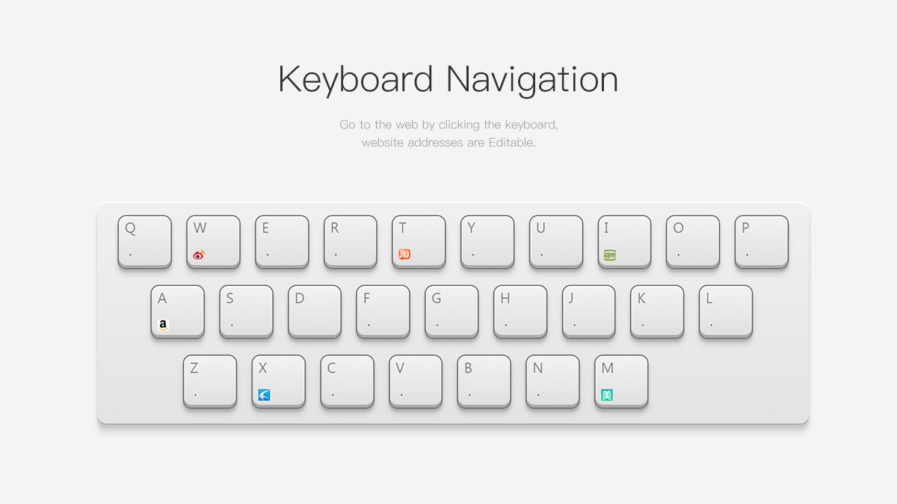

项目

1. Vue.js搭建cnode社区
使用vue脚手架vue-cli搭建cnode社区，调用cnode社区提供的 Api，
关键词：Vue.js、vue-router、组件之间的通信、计算属性、内置指令...
2. 仿网易云音乐-移动端
该项目使用jQUery实现。
包含管理端(admin)页面：支持上传歌曲，编辑/删除歌曲，创建歌单，往歌单添加歌曲。
客户端：包括首页，歌单详情，歌曲播放页，搜索页。暂停/播放歌曲，播放动画，歌词展示。
关键词：jQuery、七牛、Leancloud、Eventhub...

3. Canvas画板
该项目使用原生JS实现，主要调用 Canvas API，实现了划线、调色、橡皮擦、保存等功能。
关键词：原生 JavaScript、Canvas、响应式、jQuery

4. Keyboard导航
使用原生 js 和 css 实现的一个导航功能的键盘，点击相应的按键可以跳到对应的网站，可以自定义各个按键上的网址。
关键词：原生 JavaScript、CSS

5. CSS画个小黄人
使用原生 js 和 css 实现一个小黄人完成的动态过程。同时拥有调速的功能。用 <pre> 标签使代码保持原样。用 setTimeout() 代替 setInterval() ，再设置 duration，实现调速功能。
关键词：Html5，JavaScript，CSS，异步和回调
技能
- HTML 5 & CSS 3 能独立制作精美网页，掌握 CSS 3 动画、过渡效果、响应式等常用技术。
- jQuery 熟悉 jQuery 的常用 API，能使用 jQuery 制作网站、轮播、Tab 组件等。
- 移动端页面 会使用 REM、vw/vh、FastClick 等技术制作适配手机设备的页面。
- 前端框架 理解 MVC、MVVM 等思想，可以熟练使用相关的库，如 Vue、React
- 小程序制作 可以独立进行小程序开发。
- Vue 熟悉 Vue 常用功能，如组件、Vue-Router、双向绑定等。